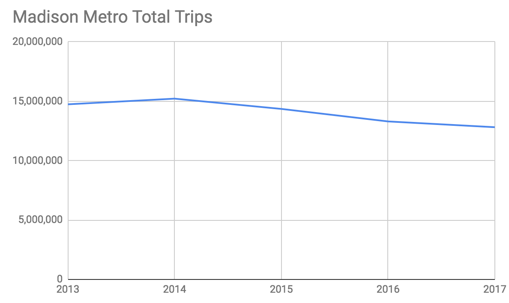

My Transportation Wish List for the City of Madison
April 26, 2019 by Philip Crawford

A few things I've been thinking and reading about the past few years
Free Bus Passes for Those Most in Need
We already sell discounted bus passes in a means tested way.
Metro 31-Day passes are available to eligible low-income riders for $28.Passes are available on a first-come, first-served basis on the 1st and 15th days of each month. Supplies are limited, so we encourage you to buy your passes on or as close to these dates as possible.
This process is somewhat onerous, it benefits very few people (450/month), and the discount is really not that much ~55%. We can do better, much better.
Free, these passes should provide unlimited FREE bus trips. Full stop.
They should be plentiful. Why limit to 450 people??
(We also provide 50% discounted fare passes for seniors and people with disabilities.)
Free Bus Passes for Teens
If we want future transit users, we should help younger people learn how to ride the bus, how to put their bike on a bus, and how convenient public transportation can be.
Madison does offer reduced fares for students. For a year pass, the price is $350, which means that at $1.25/ride the student would need to use the pass about 6 times per week in order to break even. That doesn't seem priced to encourage a person to purchase one, so at the very least, can we drop the price down dramatically?
Another reason this is important is due to the high cost of private drivers ed (and it not being offered in school) which has resulted in a lower percentage of people are getting their license before age 18. This is most pronounced in the lower income levels.
Teens in households with annual incomes greater than $60,000 obtained their licenses at a rate of 60 percent within one year of their state's minimum age for licensure and 72 percent were licensed before they turned 18. Meanwhile, for teens in households with annual incomes of less than $20,000, only 16 percent were licensed within one year of their state's minimum age and only 25 percent were licensed before age 18.
Bus Rapid Transit (BRT)
Bus Rapid Transit has a lot of momentum (which is great!), but there are problems with the current plan.
BRT is similar to light rail in that there are stations (not stops), fixed routes, and more dependable schedules. Compared to light rail, BRT can be implemented for a smaller investment which makes it ideal for smaller markets like Madison — and it can be a stepping stone to light rail at a future date if population density increases in the BRT corridor. (Madison previously asked the feds for light rail funding and the feds said "no way, implement BRT".)
There are 5 essential features of a BRT system:
- High Frequency: Known as "headway" in transportation jargon, frequent buses decrease the need to plan/look at a schedule (every 10 minutes!) and reduce both waiting time and overall trip time for the rider.
- Stations not Stops: Stations (nice ones!) improve the user experience and speed transit times by having less stops.
- Dedicated Right of Way: Faster travel and ensures that buses are seldom delayed, thus more reliable.
- Off-board Fare Collection: Payment at the station/prior to boarding, reduces delay in boarding/at stations.
- Platform Level Boarding: Reduces delays in boarding, makes handicap boarding much easier — and you get these due to having stations.
In the United States there are several BRT systems, but the BRT in a city that most closely resembles Madison (size and density) is in Richmond, VA. We should follow their example which you can see more of in this photo tour of Richmond's BRT.
The current Madison plan has more than $70 Million budgeted for purchasing new, 60 foot articulated buses. This would be an expensive mistake. Here's why:
More capacity than needed. The initial BRT plans were developed when bus ridership was increasing, but over the past few years, Madison Metro bus ridership has declined by 2.4 million rides per year from ~15,200,000 rides in 2014 to ~12,800,000 rides in 2017. We need to prove that ridership will increase with BRT before this increased carrying capacity investment makes sense.

I've also analyzed 12.7 million records of Madison transit rides and there simply is not enough bus demand or housing density to warrant 60 foot buses — yet. Remember that with BRT it is bus frequency that is important (headway) and 60 foot buses do not help with frequency. If BRT is a success and demand does pick up, we can add more routes with standard length buses (increased frequency) or then purchase 60 foot buses as needed.
The BRT National Institute even states:
"For virtually all BRT systems implemented in the United States, capacity has not been an issue."
60 foot buses are considerably more expensive. Not only are articulated buses considerably more expensive to purchase, studies suggest they are more expensive to maintain. It's the fiduciary duty of the city to act conservatively and ensure BRT ridership demand exists before investing in these new buses.
With 40 foot buses, we can choose electric! Until just recently (Nov. 2018), there were no FTA approved 60 foot electric buses. By utilizing the standard 40 foot bus, we have more options to choose electric — 60 foot electric buses are very expensive right now (~60% more than 40 foot) because they are so new to the market. (more on electric buses.)
Electric buses will make BRT different. Along with different branding, which many BRT systems implement, electric buses will make the overall experience more like light rail than traditional buses. Also, electric buses are more consistent with our city goals regarding renewable energy.
BRT is good, but 60 foot buses are not what Madison needs right now.
- Madison Metro boarding estimates
- Madison BRT cost estimates
- Madison Metro Annual Reports
- Behind the Scenes Take on Lithium-ion Battery Prices
- Seven Reasons Why Electric Vehicles Will Kill The Gas Car
Transit Oriented Development (TOD)
Without TOD, our BRT system will not be successful.
Madison has roughly 3,300 people per square mile. At this density, it is difficult to support any amount of public transportation, let alone a BRT. Without a transit oriented development plan, we risk a future of increased sprawl and low returns on our investments in public transportation.
Some background on Transit Oriented Development.
We need to immediately start thinking about how we are going to have increased density near the BRT stations — for example the low density currently proposed at Union Corners. The beauty of fixed stations, like light rail and BRT is that they send a signal to the market (developers as well as renters/home buyers) that an area will have a dependable, good public transportation option.
We know from many studies that many people want to live near transit stops. In fact, apartment and housing searches allow for searching by transit stop and apartment listings often advertise proximity to bus lines. What the city needs to do is help developers create more density near these stops. And that is done with zoning and TIF. Citizens cannot change this, the city can.
Raise Daytime Parking Rates
Our daytime rates for parking downtown are incredibly low. About $10 to park all day for a person commuting downtown? That's not enough.
We should raise parking rates in our downtown garages by 50% and especially the rates paid during the day (when demand is even more inelastic) in order to provide more incentive for people to ride share, bike, and use public transit to downtown.
We raised some parking ramp rates in 2018, but it still seems to me there is not enough incentive from a parking cost standpoint to not commute downtown by car. Let's fix that.
More and Better Bus Shelters
Bus shelters are a signal to the community of the importance of public transit and a signal to potential bus riders of where to go to wait for a bus — and be safe doing it. Bus shelters also make a big difference in people's perceived waiting time — which is shorter when the but stop is more than just a curb.
Great bus stops encourage ridership and improve the experience of taking the bus.
The quality of bus shelters is more important than many people recognize, some articles:
- Everything You Need to Know about Great Bus Stops (pdf)
- Rethinking the Bus Shelter
- How Can Transit Agencies Get Bus Stops Right?
- Madison Metro Bus Stop Improvements
Ideas to improve bus shelters:
- Use TIF money
- Consider bus stop advertising. Even better would be bus stop sponsorship by a local business.
- Spend more of the city budget on bus stops, plain and simple.
- Consider real-time displays of bus arrivals. It lowers the perception of wait times.
More Bus Routes
While many people tend to focus on the price of taking the bus (fare), we need to consider the overall cost of taking the bus. And for most people, this cost is dominated by the amount of time you're waiting and the trip distance.
If you live in an area of the city that has service once every 60 minutes, and if your trip goes through a transfer point, there's a good chance your trip is going to be more than 40 minutes and you're going to spend a decent chunk of your day simply waiting for the bus. If you are unlucky and miss your bus and it runs every 30 minutes, well then you've just lost 30 minutes of your day — and that might be the least of your worries if you're commuting to work or school.
We need to look at the routes and bus frequency for areas of the city that have lower income and lower rates of car ownership — and ensure we are providing good public transit options to those areas. This bus frequency will almost certainly add more utility than a decrease in price of $2 — although we can do both. The point is this, focusing solely on the price of a ride is missing the largest cost of riding the bus, and that is the price of people's time.
While transfer stations have their advantages in low density areas like Madison, they can add overall time and the all important waiting time to a trip — which is experienced differently. We should look to see if some daily commuting routes that take place through transit stations can be turned into a direct trip.
I'm less certain what we can and should do here as it involves detailed analysis of routes and actual trips, but it seems we can do more in providing a better public transit experience to more people. It's quite possible that what we really need to do is simply increase the funding of Madison Metro and have those funds directed at more routes to the lower income neighborhoods.
Conclusion
There's a lot we can do to make Madison work better for everyone. Housing and transportation are two of the larger expenses a person experiences and they are inextricably linked. The more that housing costs rise on the isthmus, the more people are pushed out to areas of the city that are less well served by public transportation.
With that said, the city of Madison needs to operate within the constraints of a budget, so every expenditure and investment needs to be analyzed to ensure we're getting the most for the citizens of this city.
---------------------------------------------------------------------------------------------------
Source as of Dec. 5, 2019: https://medium.com/@philipcrawford/my-transportation-wish-list-for-the-city-of-madison-b3f8eb51bf90